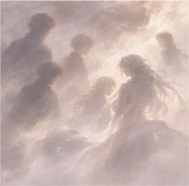
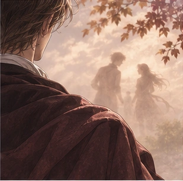
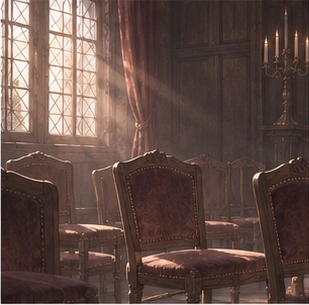

장면 01 / 28
Zueignung헌시
「돌아오지 않는 이들에게」 — 「헌시」의 원문과 그림을 바탕으로, 이야기 밖의 서술자가 인물의 행동과 마음을 설명하도록 다시 쓴 글입니다. 이름 없는 시인은 파우스트와 별개입니다. [나레이션]은 서술자의 설명이고, [독백]은 시인이 마음속으로 하는 말입니다. 독백과 보충 설명은 이해를 돕기 위한 각색입니다. 원문·번역은 각 삽화 아래에서 펼쳐 볼 수 있습니다.
[나레이션: 이야기 밖에서 인물의 마음까지 알려 주는 서술자]
파우스트의 이야기가 시작되기 전, 먼저 그 이야기를 다시 쓰려는 한 사람을 만나야 했다. 그는 오랫동안 마음에 품어 온 인물들을 글로 불러내려는 시인이었다.
책의 첫머리에 놓인 「헌시」는 파우스트가 겪는 사건이 아니다. 이야기를 만들어 온 사람이 지난 시간을 돌아보며, 소중했던 이들에게 마음을 건네는 시다. 이 재서술에서는 그 목소리를 따라가기 쉽도록, 시 속에서 말하는 사람을 이름 없는 시인으로 그렸다. 시인은 파우스트와 다른 인물이며, 뒤이어 나오는 극장 서막의 ‘시인’과도 같은 사람이라고 정하지 않는다.
그날, 그는 다시 이야기를 시작하려 했다. 그러나 마음속 인물들을 불러내자, 그 이야기를 처음 들어 주었던 사람들까지 함께 떠올랐다. 오래된 작품으로 돌아가는 일은, 그 작품과 함께 살았던 자신의 시간으로 돌아가는 일이기도 했다.
그 질문을 품은 채 그가 고개를 들었을 때, 안개 너머로 낯익은 모습들이 어른거렸다.
 안개 속 흔들리는 형상
안개 속 흔들리는 형상[나레이션: 이야기 밖에서 인물의 마음까지 알려 주는 서술자]
시인은 처음에 안개가 움직이는 줄 알았다. 그러나 시인은 곧 그 안에서 사람의 윤곽을 알아보았다. 오래전 그의 마음에 머물렀다가 사라진 이들이었다.
그는 창가에 선 채 움직이지 않았다. 잊었다고 여긴 얼굴들이 돌아올 때, 사람은 반가움보다 두려움을 먼저 느끼기도 한다. 시인도 그랬다.
여기서 나타나는 모습은 실제로 돌아온 사람들이 아니라, 시인의 마음속에서 되살아난 기억이다. 헌시는 소중한 사람들에게 바치는 시를 말한다. 이 작품에서는 본격적인 이야기가 시작되기 전에, 지나온 삶과 그때 함께했던 사람들을 돌아본다.
독일어 원문 · 한국어 번역 펼치기
Ihr naht euch wieder, schwankende Gestalten,
Die früh sich einst dem trüben Blick gezeigt.
그대들이 다시 다가오는구나, 흔들리는 형상들이여,
일찍이 흐릿한 내 눈앞에 나타났던 그대들이여.
 붙잡으려는 손
붙잡으려는 손[나레이션: 이야기 밖에서 인물의 마음까지 알려 주는 서술자]
그가 천천히 손을 내밀었다. 손끝에 닿은 것은 차가운 공기뿐이었다.
이번에는 붙잡을 수 있을까. 그 질문에는 오래전처럼 다시 믿고 싶다는 마음과, 다시 잃고 싶지 않다는 마음이 함께 들어 있었다. 그는 아직 어느 쪽이 더 간절한지 알지 못했다.
독일어 원문 · 한국어 번역 펼치기
Versuch ich wohl, euch diesmal festzuhalten?
Fühl ich mein Herz noch jenem Wahn geneigt?
이번에는 그대들을 붙잡아 보려 하는가?
내 마음은 아직도 그 옛 환상으로 기우는가?

다가오는 기억[나레이션: 이야기 밖에서 인물의 마음까지 알려 주는 서술자]
희미했던 모습들이 하나둘 가까워졌다. 시인은 물러서는 대신 손을 내렸다.
그들을 붙잡으려 애쓸수록 기억은 얼굴보다 빈자리부터 보여 주었다. 이제 그는 자신이 원하는 대로 그들을 되살릴 수 없다는 것을 받아들이려 했다. 돌아오는 모습 그대로, 잠시 곁에 두기로 했다.
독일어 원문 · 한국어 번역 펼치기
Ihr drängt euch zu! nun gut, so mögt ihr walten,
Wie ihr aus Dunst und Nebel um mich steigt;
그대들이 밀려오는구나! 좋다, 마음껏 나를 지배하라,
연무와 안개 속에서 내 주위로 떠오르는 대로.
 젊은 마음을 흔드는 숨결
젊은 마음을 흔드는 숨결[나레이션: 이야기 밖에서 인물의 마음까지 알려 주는 서술자]
바람이 옷자락을 건드렸다. 아주 작은 움직임이었지만, 시인의 가슴에는 젊은 날의 떨림이 되살아났다.
세월은 몸에 피로를 남겼어도, 어떤 목소리를 기다리던 습관까지 지우지는 못했다. 그는 그 사실이 기쁘면서도 서글펐다. 아직 흔들릴 수 있다는 것은, 아직 아플 수 있다는 뜻이기도 했다.
독일어 원문 · 한국어 번역 펼치기
Mein Busen fühlt sich jugendlich erschüttert
Vom Zauberhauch, der euren Zug umwittert.
그대들의 행렬을 감싸는 마법 같은 숨결에
내 가슴은 젊은 날처럼 떨리는구나.
 행복했던 날들
행복했던 날들[나레이션: 이야기 밖에서 인물의 마음까지 알려 주는 서술자]
안개 너머로 햇빛이 번졌다. 시인의 기억 속 길은 늘 그랬던 것처럼 나무 그늘과 밝은 흙빛 사이로 이어졌다.
그 길을 걷던 날에는 자신이 행복한지 오래 생각할 필요가 없었다. 곁에 누군가 있었고, 다음에 나눌 말이 남아 있었다. 지금의 그가 그리워하는 것은 그런 날들의 대단하지 않은 넉넉함이었다.
독일어 원문 · 한국어 번역 펼치기
Ihr bringt mit euch die Bilder froher Tage,
Und manche liebe Schatten steigen auf;
그대들은 즐거웠던 날들의 모습을 데려오고,
정다운 그림자들도 여럿 떠오르는구나.

첫사랑과 우정의 그림자[나레이션: 이야기 밖에서 인물의 마음까지 알려 주는 서술자]
나란히 선 두 그림자가 보였다. 한쪽에는 처음 사랑했던 마음이, 다른 쪽에는 오래 믿었던 우정이 겹쳐 있었다.
시인은 얼굴을 분명히 보려고 눈을 가늘게 떴다. 하지만 기억은 그들이 했던 말보다, 그 말에 안심했던 자신의 마음을 더 선명하게 돌려주었다. 그는 잃어버린 사람들뿐 아니라 그들과 함께 있을 때의 자신도 그리워하고 있었다.
첫사랑과 우정은 서로 다른 관계지만, 시인에게는 자신이 누군가를 믿고 마음을 나눌 수 있었던 시간을 뜻했다.
독일어 원문 · 한국어 번역 펼치기
Gleich einer alten, halbverklungnen Sage
Kommt erste Lieb und Freundschaft mit herauf;
오래되어 반쯤 잊힌 전설처럼
첫사랑과 우정도 함께 되살아나는구나.
 미로 같은 삶의 길
미로 같은 삶의 길[나레이션: 이야기 밖에서 인물의 마음까지 알려 주는 서술자]
그가 지나온 세월은 멀리서 보면 길 하나로 이어지는 듯했다. 그러나 그 안에는 되돌아간 자리와 끝내 돌아가지 못한 자리가 있었다.
시인은 한때 모든 선택에 이유가 있다고 믿었다. 세월이 흐른 뒤에도 설명되지 않는 이별은 남았다. 기억 속 길들이 미로처럼 갈라지는 까닭을, 그는 이제 자신의 지혜가 부족한 탓으로만 돌리지 않았다.
삶이 미로 같다는 말은, 살아갈 때는 어느 선택이 어디로 이어질지 쉽게 알 수 없다는 뜻이다. 시인도 이별의 이유를 모두 설명할 수는 없었다.
독일어 원문 · 한국어 번역 펼치기
Der Schmerz wird neu, es wiederholt die Klage
Des Lebens labyrinthisch irren Lauf,
아픔은 새로워지고, 탄식은 되풀이하네,
미로처럼 헤매던 삶의 길을.
 떠나간 이들의 빈자리
떠나간 이들의 빈자리[나레이션: 이야기 밖에서 인물의 마음까지 알려 주는 서술자]
빈 벤치 앞에서 기억이 멈췄다. 누군가 조금만 늦게 도착하는 것처럼 보였으나, 시인은 그 자리에 끝내 아무도 앉지 않으리라는 것을 알았다.
그 역시 그들과 아름다운 시간을 더 누릴 수 있으리라 믿었었다. 그래서 미뤄 둔 말이 있었고, 당연하게 여긴 만남이 있었다. 그때의 믿음이 잘못이었다고 할 수는 없었지만, 남은 사람은 그 믿음 때문에 다시 아팠다.
독일어 원문 · 한국어 번역 펼치기
Und nennt die Guten, die, um schöne Stunden
Vom Glück getäuscht, vor mir hinweggeschwunden.
행복에 속아 아름다운 시간을 꿈꾸다가
나보다 먼저 사라진 좋은 이들의 이름을 부르네.

사라진 첫 청중[나레이션: 이야기 밖에서 인물의 마음까지 알려 주는 서술자]
이제 그의 노래를 처음 들어 주었던 이들은 여기 없었다. 시인은 비어 있는 자리들을 바라보며, 새 노래를 누구에게 들려주려 했는지 생각했다.
그가 더 좋은 말을 찾고 더 나은 문장을 쓰는 동안에도 시간은 그들을 기다려 주지 않았다. 작품이 완성되었다고 해서 청중까지 돌아오는 것은 아니었다. 그는 그 단순한 사실 앞에서 오래 침묵했다.
독일어 원문 · 한국어 번역 펼치기
Sie hören nicht die folgenden Gesänge,
Die Seelen, denen ich die ersten sang;
그들은 이어지는 이 노래를 듣지 못하리,
내가 처음 노래를 들려주었던 그 영혼들은.
[나레이션: 이야기 밖에서 인물의 마음까지 알려 주는 서술자]
물 위의 작은 물결이 퍼졌다가 잦아들었다. 시인은 처음 자신의 노래가 되돌아오던 순간을 떠올렸다.
그때의 대답은 크지 않았어도 충분했다. 지금은 그 소리의 높낮이조차 정확히 기억할 수 없었다. 그래도 자신이 그 대답을 듣고 얼마나 용기를 얻었는지는 잊지 않았다.
독일어 원문 · 한국어 번역 펼치기
Zerstoben ist das freundliche Gedränge,
Verklungen, ach! der erste Widerklang.
다정하게 모였던 무리는 흩어졌고,
아아, 첫 메아리도 사라졌구나.
 낯선 군중 앞의 노래
낯선 군중 앞의 노래[나레이션: 이야기 밖에서 인물의 마음까지 알려 주는 서술자]
앞으로 그의 노래를 듣게 될 사람들은 낯선 이들이었다. 그들 가운데는 진심으로 기뻐할 사람도 있을 터였다.
시인도 그 사실을 알았다. 그런데도 박수를 떠올리면 마음이 편하지 않았다. 새로 노래를 듣는 사람들은 그의 작품을 만나겠지만, 이 노래가 누구를 잃은 뒤에 쓰였는지까지 알 수는 없었기 때문이다.
박수를 받으면 누구나 기쁠 것 같지만, 시인의 감정은 단순하지 않았다. 새로 듣는 칭찬이 반가워도, 함께 기뻐해 줄 옛 친구들이 없다는 슬픔까지 사라지지는 않았다.
독일어 원문 · 한국어 번역 펼치기
Mein Lied ertönt der unbekannten Menge,
Ihr Beifall selbst macht meinem Herzen bang,
내 노래는 낯선 군중에게 울려 퍼지고,
그들의 박수마저 내 마음을 불안하게 하네.
 세상에 흩어진 벗들
세상에 흩어진 벗들[나레이션: 이야기 밖에서 인물의 마음까지 알려 주는 서술자]
옛 친구들이 모두 죽은 것은 아니었다. 누군가는 아직 먼 곳에서 살아가고 있을지도 몰랐다.
그러나 살아 있다는 사실만으로 다시 만날 수 있는 것은 아니었다. 서로의 소식을 모른 채 다른 길을 걷는 동안, 한때 가까웠던 사람들도 돌아갈 곳을 잃었다. 시인은 그들의 삶을 함부로 상상하지 않고, 잠시 잘 지내기를 바랐다.
독일어 원문 · 한국어 번역 펼치기
Und was sich sonst an meinem Lied erfreuet,
Wenn es noch lebt, irrt in der Welt zerstreuet.
한때 내 노래를 기뻐했던 이들은,
아직 살아 있다면, 세상 곳곳에 흩어져 헤매리.
 고요한 영혼의 세계를 향한 그리움
고요한 영혼의 세계를 향한 그리움[나레이션: 이야기 밖에서 인물의 마음까지 알려 주는 서술자]
그리움은 그를 더 고요한 곳으로 데려갔다. 그곳에서는 누구도 재능을 증명하라고 재촉하지 않았고, 끝난 일을 서둘러 잊으라고 말하지도 않았다.
시인은 그 고요함이 두렵지 않았다. 오랫동안 외면했던 슬픔을 인정하자, 더는 그것을 이기기 위해 애쓸 필요가 없어졌다. 그가 바란 것은 잃어버린 이들을 지배하는 힘이 아니라, 그들을 떠올려도 무너지지 않을 잠깐의 평온이었다.
독일어 원문 · 한국어 번역 펼치기
Und mich ergreift ein längst entwöhntes Sehnen
Nach jenem stillen, ernsten Geisterreich,
그리고 오래 잊었던 그리움이 나를 사로잡네,
저 고요하고 엄숙한 영혼의 세계를 향한 그리움이.
 바람에 울리는 하프
바람에 울리는 하프[나레이션: 이야기 밖에서 인물의 마음까지 알려 주는 서술자]
열린 창으로 바람이 들었다. 하프의 가느다란 줄이 누군가의 손길 없이 떨렸다.
소리는 일정하지 않았고 곧 끊어질 듯했다. 시인은 그 불완전한 울림에 귀를 기울였다. 지금 자신의 노래도 저처럼, 다 붙잡지 못한 기억 사이를 지나며 겨우 소리를 얻고 있었다.
바람이 줄을 울리는 악기를 에올리아 하프라고 한다. 시인은 스스로 완전히 조절할 수 없는 그 소리에서, 기억과 감정에 이끌려 나오는 자신의 노래를 떠올렸다.
독일어 원문 · 한국어 번역 펼치기
Es schwebet nun in unbestimmten Tönen
Mein lispelnd Lied, der Äolsharfe gleich,
내 나직한 노래는 아직 정해지지 않은 음조로,
바람에 울리는 하프처럼 떠도네.
 눈물과 부드러워진 마음
눈물과 부드러워진 마음[나레이션: 이야기 밖에서 인물의 마음까지 알려 주는 서술자]
눈물이 뺨을 타고 흘렀다. 그는 닦으려다 손을 멈췄다.
울지 않는 일이 견디는 일과 같지는 않았다. 오래 굳혀 온 마음이 조금 느슨해졌을 때, 그 안에 남은 사랑하는 마음도 함께 드러났다. 시인은 누구에게 보일 필요도 없는 눈물을 잠시 그대로 두었다.
독일어 원문 · 한국어 번역 펼치기
Ein Schauer faßt mich, Träne folgt den Tränen,
Das strenge Herz, es fühlt sich mild und weich;
전율이 나를 붙들고, 눈물 뒤에 눈물이 흐르며,
굳었던 마음은 온화하고 부드러워지네.
 잃어버린 것이 현실이 되다
잃어버린 것이 현실이 되다[나레이션: 이야기 밖에서 인물의 마음까지 알려 주는 서술자]
방 안의 가구와 창틀은 여전히 제자리에 있었다. 그러나 그가 지금 가진 것들은 아득해지고, 사라진 사람들과 나누었던 순간들이 가까워졌다.
그들이 실제로 돌아온 것은 아니었다. 시인은 그 차이를 알면서도, 기억이 남은 사람의 오늘을 바꿀 수 있다는 사실까지 부정하지는 않았다.
그는 빈자리를 바라보던 눈을 거두었다. 그리고 돌아오지 않을 이들에게도 닿기를 바라며, 다시 노래를 시작했다.
기억이 현실이 된다는 말은 죽은 사람이 정말 살아났다는 뜻이 아니다. 오래전의 사랑과 우정이 지금의 시인에게 다시 힘을 주기 시작했다는 뜻에 가깝다.
독일어 원문 · 한국어 번역 펼치기
Was ich besitze, seh ich wie im Weiten,
Und was verschwand, wird mir zu Wirklichkeiten.
내가 지닌 것은 아득히 멀리 있는 듯 보이고,
사라진 것은 내게 현실이 되어 돌아오네.